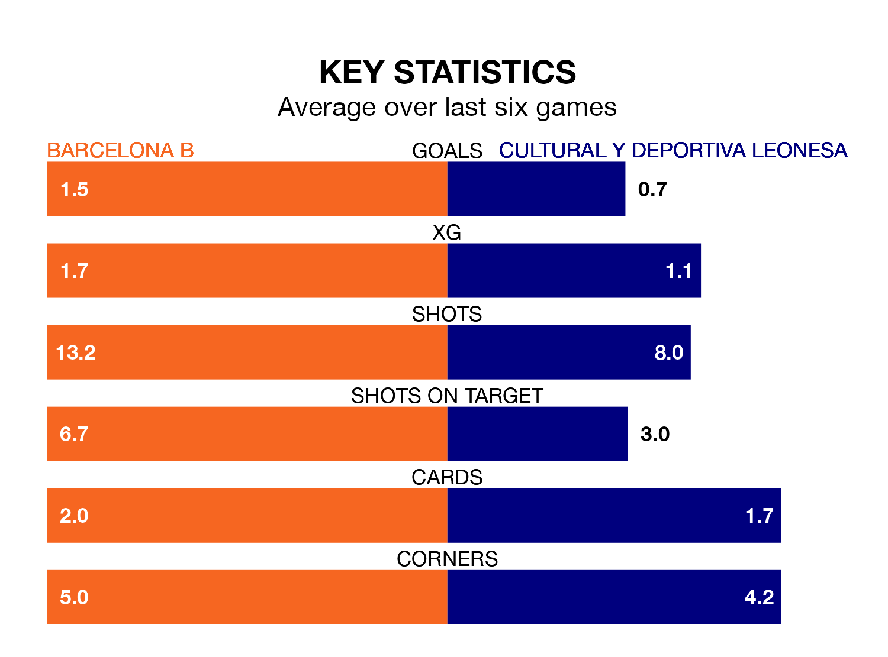

Barcelona B face a challenge to maintain their high-scoring form at home against a tight Cultural y Deportiva Leonesa defence on Sunday.
With 34 goals in 24 games, Barcelona B are the third-highest scorers in Primera Division RFEF Group 1 ahead of the 5pm kick-off at Mini Estadi.
They face a Cultural y Deportiva Leonesa side who have scored 23 in 24 matches, but conceded only 15 goals, putting them joint-second among the league's tightest defences – only Gimnàstic de Tarragona have conceded fewer goals.
In Pau Victor, Barcelona B have the league's sharpest shooter so far this season. He has notched 12 goals in 20 appearances.
Cultural y Deportiva Leonesa's top scorers, with four goals each, are Santiago Samanes Bonito and Martín Solar Ruiz.
The visitors are fourth in the table after 24 games, of which they have won 11 and drawn eight, earning 41 points.
The home team are one place behind Cultural y Deportiva Leonesa in fifth, with 12 wins and five draws putting them on the same number of points.
Barcelona B are in good form in Primera Division RFEF Group 1, with four wins and a draw from their last six games.
With a win and four draws over that period, Cultural y Deportiva Leonesa's form is much worse – they have taken seven points from 18, compared to Barcelona B's 13.
Barcelona B's last match was on Sunday, a 3-1 win against Rayo Majadahonda, with Marc Guiu Paz, Mikayil Ngor Faye and Naim García García getting the goals for Barcelona B.
Cultural y Deportiva Leonesa drew 0-0 with SD Ponferradina last time out, also on February 18.
Updated: 12:18 (UTC), 19/02/24